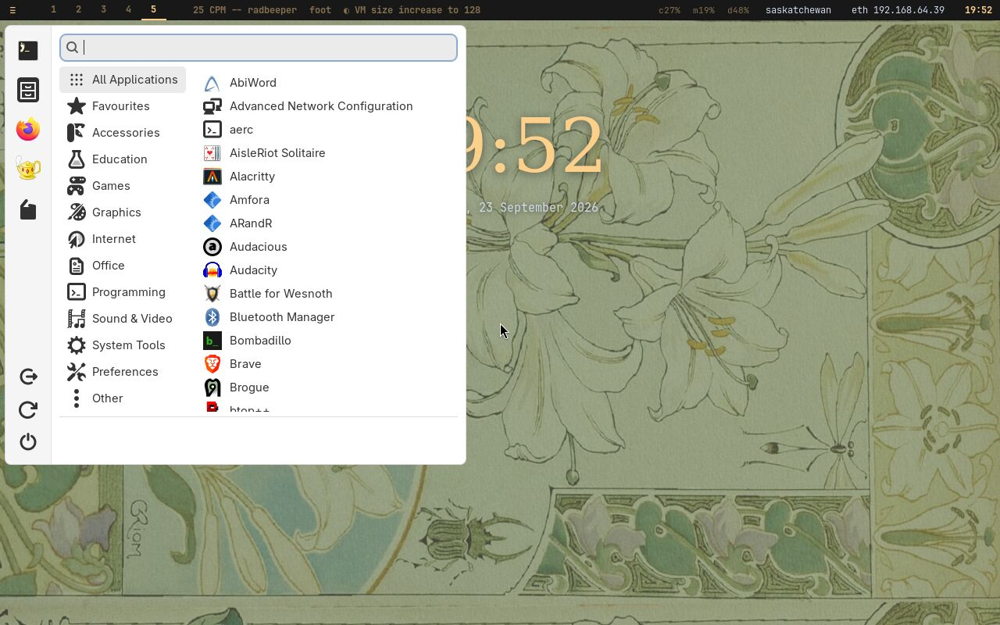
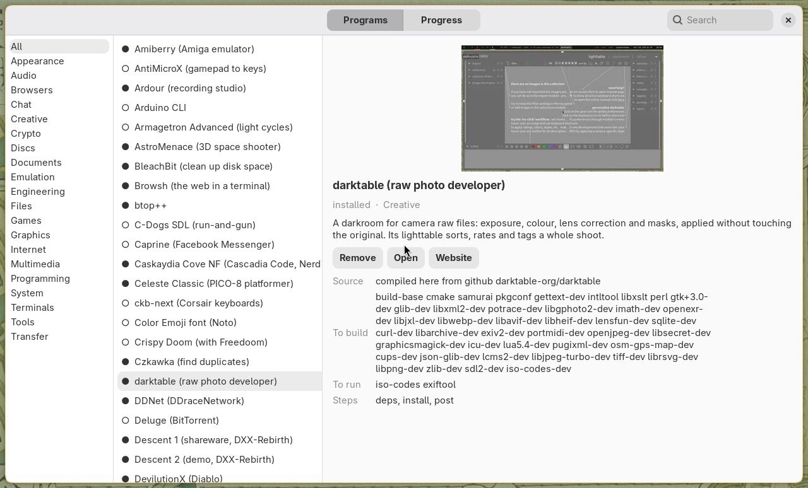
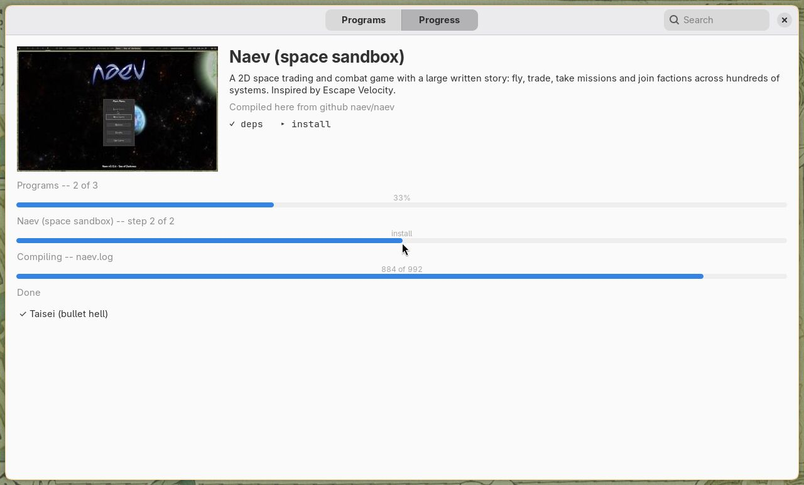
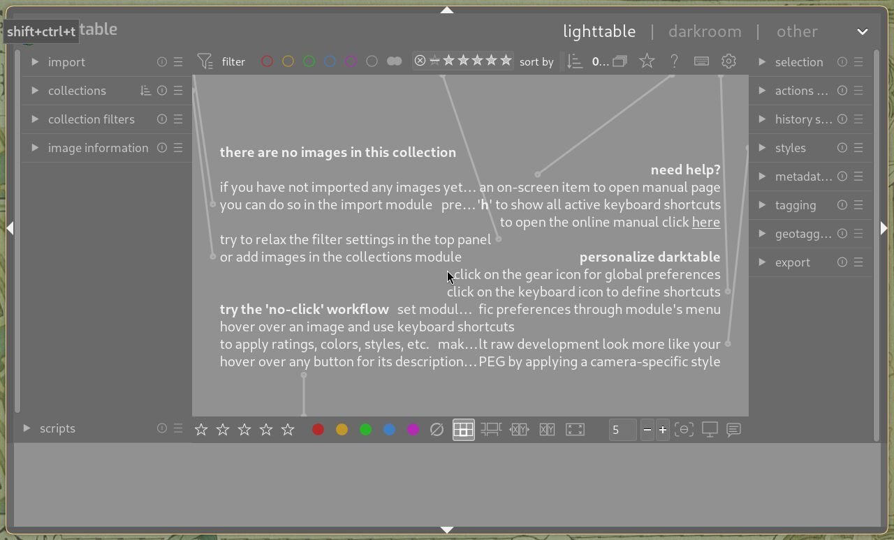
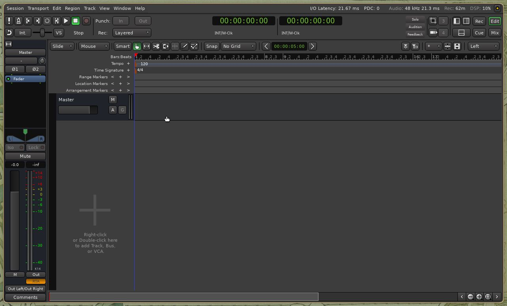
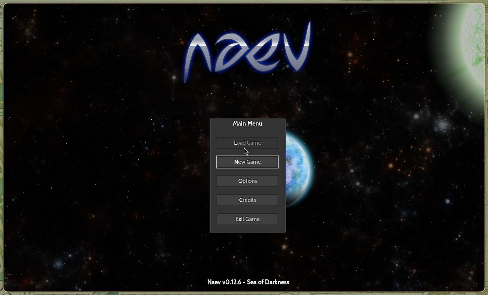
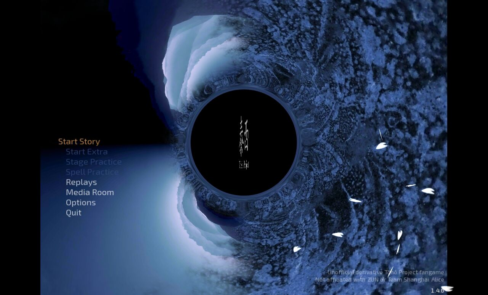
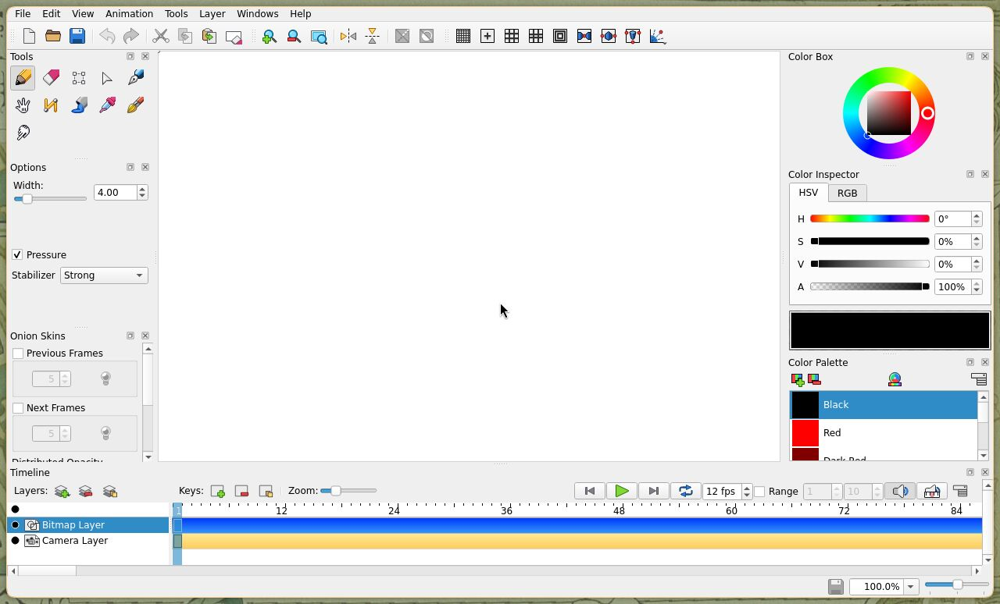
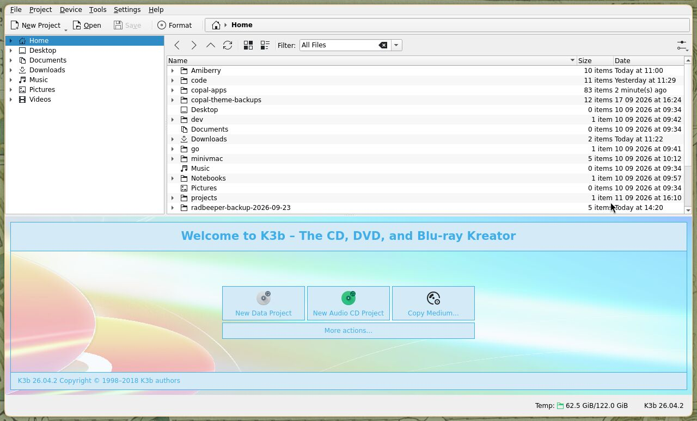

The full monty
An opinionated desktop: decided once, so that a new machine arrives finished instead of as a list of choices.

01Hyprland, on Wayland
The full level installs Hyprland, a tiling Wayland compositor. Windows arrange themselves: open two and they share the screen, open a third and they share it again, with nothing to drag and no corner to resize. Nine workspaces sit one key away each. The compositor draws with the GPU — rounded corners, soft shadows and a little blur — and in a UTM virtual machine that is the Mac's own GPU, reached through virgl. Where only software rendering is available, Copal's graphics check says so, and says why, instead of leaving a slow desktop to be puzzled over.
The session belongs to your own account, never to root, and it can start
at boot with an automatic login. X11 and i3 stay installed beside it as the
fallback; one word in /etc/copal/session decides which desktop
the machine boots into.
02Linux Antiquity
The look is Linux Antiquity by diinki: a theme built on an aesthetic deliberately detached from computing — art nouveau, old scientific illustration, and the personified suns and moons of classical astronomy. Its palette runs from aged paper to amber to ink. This website is set in the same palette, read out of the theme's own configuration.
03Your hands, on the keyboard or the mouse
Everything can be done from the keyboard, and nothing requires it. The keys are the real bindings from the configuration the installer writes; the full list is one key away, and is shown at the first login.
04Copal Apps
Every graphical program Copal offers is in one window, grouped on shelves, each with its picture, two sentences saying what it is, where it comes from, what it needs, and whether it is installed. Installing one opens its slide: the program arriving, its steps ticked off, and three bars — the run, the program, and the compile itself.


05Programs that arrive with it
The full monty installs thirteen programs at the first login, while the slideshow runs: games, photography, writing, animation, recording, disc burning, scanning and duplicate finding. Where Alpine's package is current and stable, it is used; where upstream is ahead, the program is compiled on the machine from its pinned release.






06Also in the box
- A toolchain with an agent in it. gcc, gdb, Python, Rust, Go and an nvim set up for building — and Claude Code, installed by default, checked first to run on the CPU it is given.
- One clipboard. Copy in any window and paste in any other, and in a virtual machine, to and from the Mac.
- SSH with your key, compressed swap in RAM, and root locked
behind
doas— the plumbing a machine should have and nobody wants to set up. - Over 300 programs in the catalogue and 112 more in Copal Apps, each one a line saying what it is for.